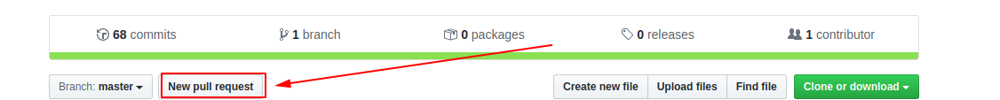

مشارکت در نوشتن کتاب
به دو روش زیر میتونید در توسعه این کتاب همکاری کنید:
حمایت مالی
حمایت عملی
-
توی github.com یه حساب کاربری بسازید.
-
وارد آدرس github.com/malijani/linux-essentials بشید و روی دکمه Fork بفشارید :

-
ابزار git و python3 و pip و virtualenv رو نصب کنید(برای پلتفورم های مختلف این ابزار ها ارائه داده شدند. متناسب با سیستم عامل خودتون عمل نصب رو انجام بدید!)
pip install virtualenv- دستور زیر رو اجرا کنید(به جای YOUR_USERNAME نام کاربری گیتهاب خودتون رو بذارید):
git clone https://github.com/YOUR_USERNAME/linux-essentials- به linux-essentials تغییر مسیر بدید و محیط مجازی توسعه پایتون رو بسازید(راهنمای virtualenv) :
cd linux-essentialsvirtualenv -p python3 .venv- محیط مجازی رو فعال کنید :
Windows Git Bash:
Linux:
source .venv/Scripts/activateLinux:
source ./.venv/bin/activate
- ابزار های مورد نیاز پروژه رو در حالی که محیط مجازی پایتون فعال هست رو به کمک pip نصب کنید:
pip install -r requirements.txt- حالا که محیط توسعه آمادست؛ کافیه نمونه تم رو که توی مخزن قرار دادم با نام mkdocs-theme-material.yml رو به مسیر زیر انتقال بدید:
Windows Git Bash:
Linux:
cp mkdocs-theme-material.yml .venv/Lib/site-packages/material/mkdocs_theme.yml
Linux:
cp mkdocs-theme-material.yml .venv/lib/python3.X/site-packages/material/mkdocs_theme.yml
به جای X در سیستم عامل لینوکس، نسخه پایتون مورد استفاده خودتون رو قرار بدید که با زدن کلید TAB مشخص میشه...
- سرور داخلی mkdocs رو برای توسعه و ویرایش راه اندازی کنید :
mkdocs serve-
حالا کافیه محتویات درون مسیر docs رو با markdown ویرایش کنید و تغییرات رو به صورت زنده در مسیر localhost:8000 مشاهده کنید.
-
پس از انجام تغییرات دلخواهتون کافیه به کمک git اونا رو ذخیره کنید و به مخزن روی سرور گیتهابتون که از مخزن اصلی فرستاده شده بفرستید:
git add .git commit -m "Changed FILE Fixed ISSUE"git push- وارد حساب کاربری گیتهاب و مخزن فورک شده linux-essentials بشید ؛ حالا روی دکمه New pull request بزنید ، موضوع تغییرات رو تعیین کنید و برای اون ها توضیحاتی بیارید و دکمه Create pull request رو بزنید تا ایجاد بشه:

(مثالی برای انتخاب موضوع و توضیحات):

You can change me if you're testing this instruction!